Angourakis et al. - Early Neolithic of Europe
6-8th November 2019
Theory strikes back
A modelling and simulation theory building approach on the origin of agriculture
Andreas Angourakis, Jonas Alcaina-Mateos, Marco Madella, and Débora Zurro
Session 6: Subsistence
https://andros-spica.github.io/ENE-Angourakis-et-al-2019/index.html?print-pdf (printable version)
 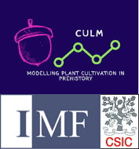
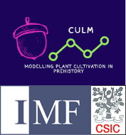
Plant domestication and origin of agriculture
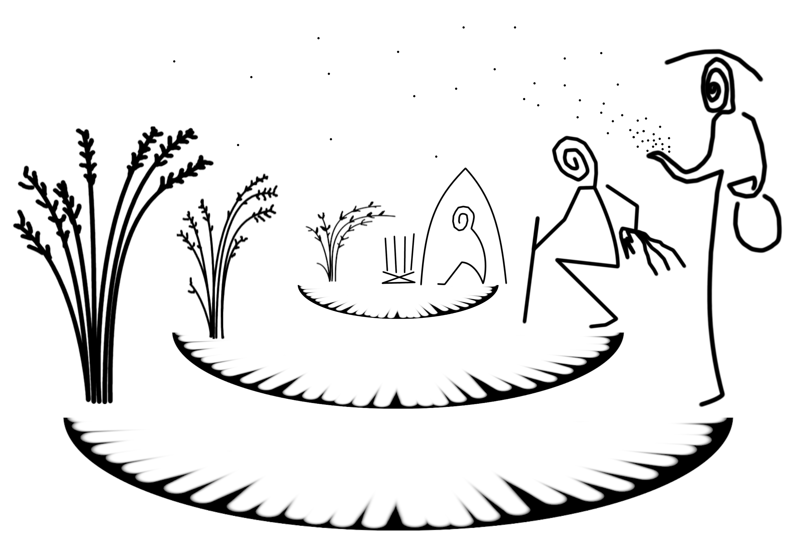
Origins of agriculture: transitions from foraging to any modality of agriculture.
Agriculture: a subsistence system in which humans rely on extracting foodstuff from domesticated species.
Domestication: process in which certain human behaviours condition the differential reproduction of phenotypes of another species, eventually modifying its genetic composition (domestication syndrome).
Modelling and theory building
- Advances in where/when, but how/why still lacking
- Common topics, but still conflicting models:
push vs pull,
internal vs external causation,
communalities vs particularities - Converging framework:
Coevolution between humans and another species
as mutualistic partners
The Human-Plant Coevolution model
the idea
- Inspiration from
D. Rindos (1984) The Origins of Agriculture: An evolutionary Perspective - Combining models:
Population ecology (similar to predator-prey models)
+
Replicator Dynamics
(Schuster & Sigmund 1983 Replicator Dynamics J. theor. Biol 100:533-538)

dynamically reinforced (coevolution),
positive feedback loop (mutualism)
positive feedback loop (mutualism)
- Humans become more dependent on a plant population as a food source, and invest more time and energy in maintaining the conditions favouring it.
- The plant population rely more on a human-modified environment, and some phenotypes thrive the more intense is human action.
design
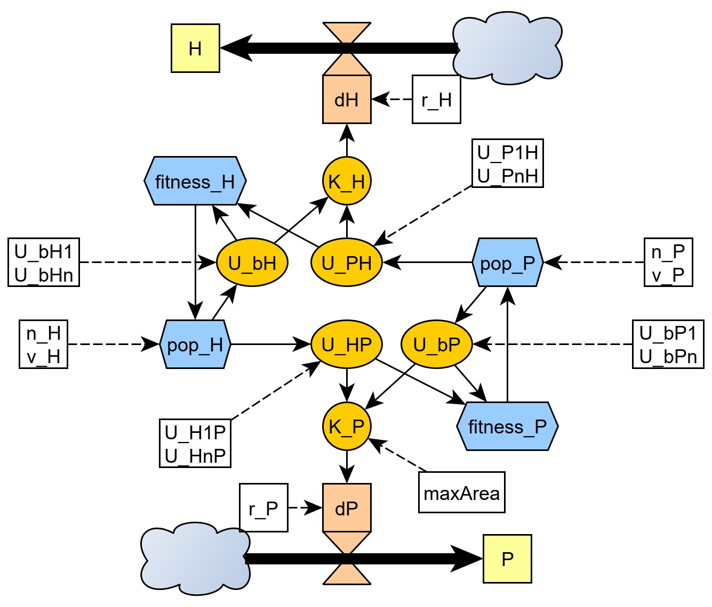
Coevolution coefficient
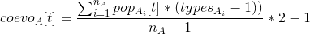
Coevolution coefficient
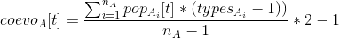
Populations
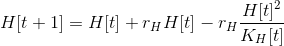
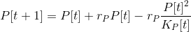
Carrying capacities 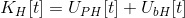
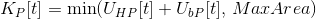
Utilities 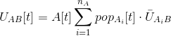 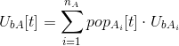
Proportion of types 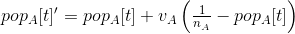
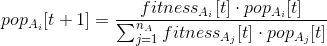
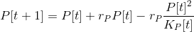
Carrying capacities 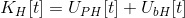
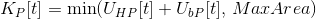
Utilities 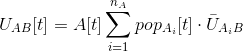 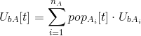
Proportion of types 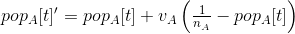
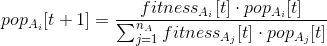
dynamics
Two populations linked by mutualism
Coevolutionary dynamics integrating
utility exchange and
phenotypic fitness
Coevolutionary dynamics integrating
utility exchange and
phenotypic fitness
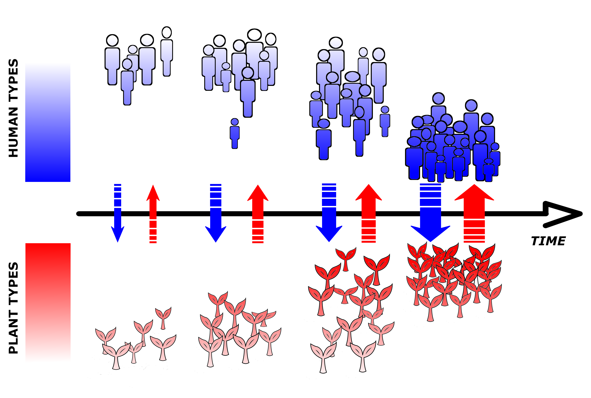
Outcomes: End-states
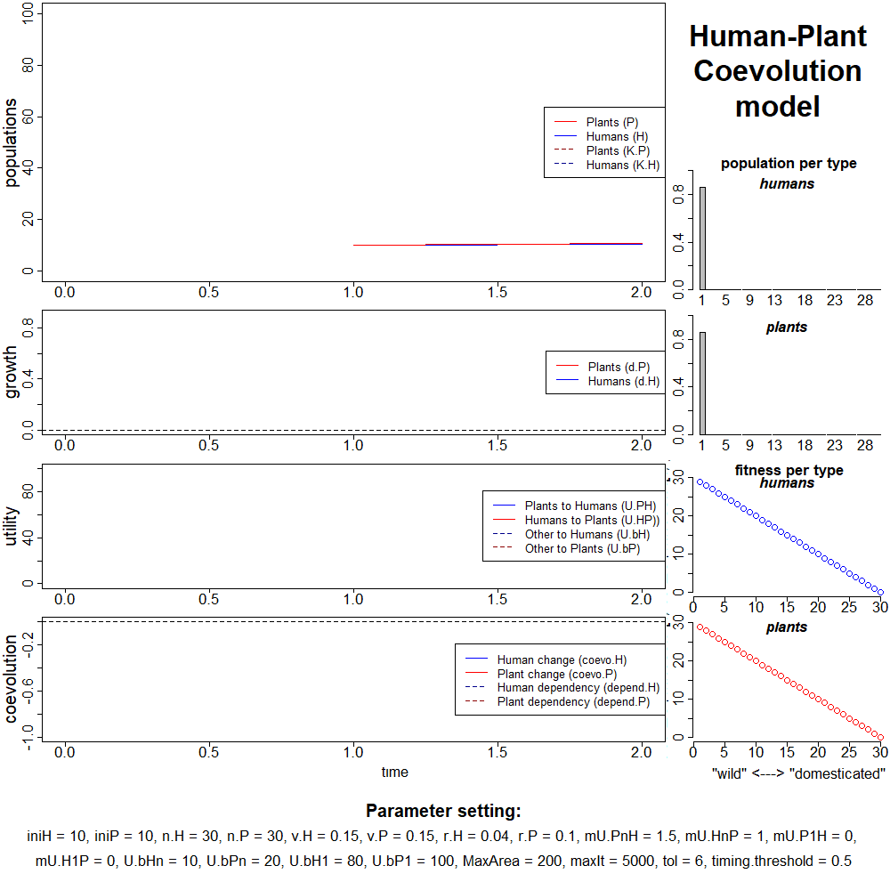
Coevolution does not occur
weaker mutualism
population levels can still be relatively high, depending on parameter conditions

Coevolution occurs
stronger mutualism
both population "booms" and "bleeps" are possible
order and scale of timing of change also vary
boom bleep long boom


Coevolution occurs partially
one population achieve the full potential of change

Coevolution occurs partially
(II)
One or both populations undergo a significant, but partial change, remaining relatively well distributed among types.

Coevolution occurs partially
(III)
Both populations become trapped in an endless cycle alternating stronger and weaker mutualism
Sensitivity analysis
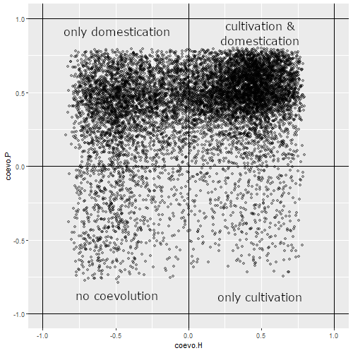
Extensive exploration of parameter space
Change in plants (domestication) is more likely to happen than change in humans (cultivation)
(assuming all conditions explored are equally probable)
multicausality
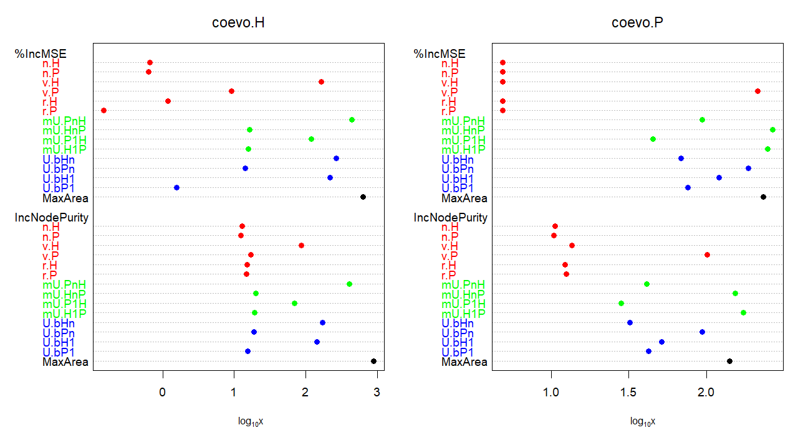
multiple requirements/triggers for coevolution to happen
but there are differences in importance
(parameters more likely to be requirements/triggers than others)
but there are differences in importance
(parameters more likely to be requirements/triggers than others)
Roles of parameters
- facilitators
- obstructors
- scalers
Example:
utility of the most mutualistic human and plant types
→ facilitators and scalers
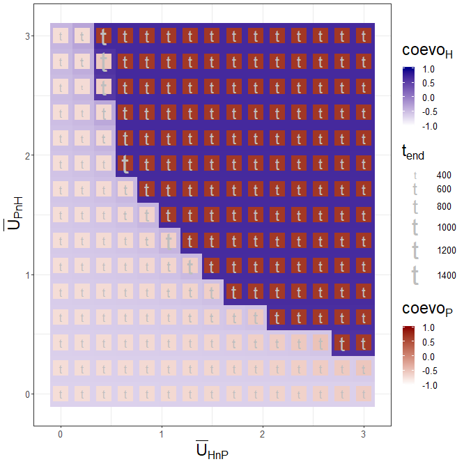
Publication & documentation
- publication in preparation
- R package (HPCoevo) to be release
- repository of this presentation:
https://github.com/Andros-Spica/ENE-Angourakis-et-al-2019
Funding
Modelling plant cultivation in prehistory/Modelado del cultivo en la prehistoria (HAR2016-77672-P; PI: Débora Zurro, IMF-CSIC)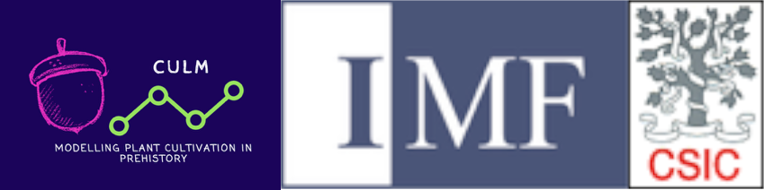
Winter Rain, Summer Rain: Adaptation, Climate Change, Resilience and the Indus Civilisation TwoRains (ERC-2014-CoG; PI: Cameron Petrie, University of Cambridge)
Theory strikes back
A modelling and simulation theory building approach on the origin of agriculture
Andreas Angourakis, Jonas Alcaina-Mateos, Marco Madella, and Débora Zurro
Session 6: Subsistence
THANK YOU!
address any questions to A. Angourakis: andros.spica@gmail.com
available at https://andros-spica.github.io/ENE-Angourakis-et-al-2019/https://andros-spica.github.io/ENE-Angourakis-et-al-2019/index.html?print-pdf (printable version)